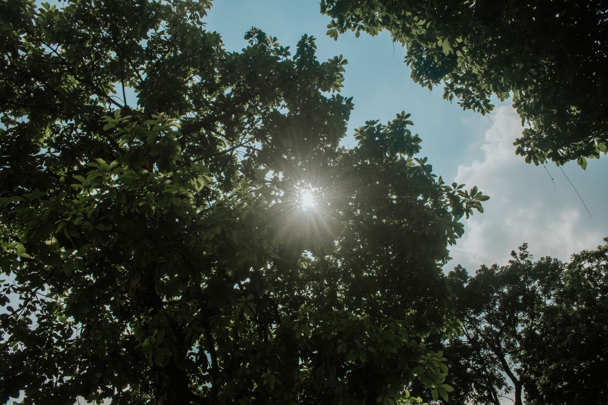
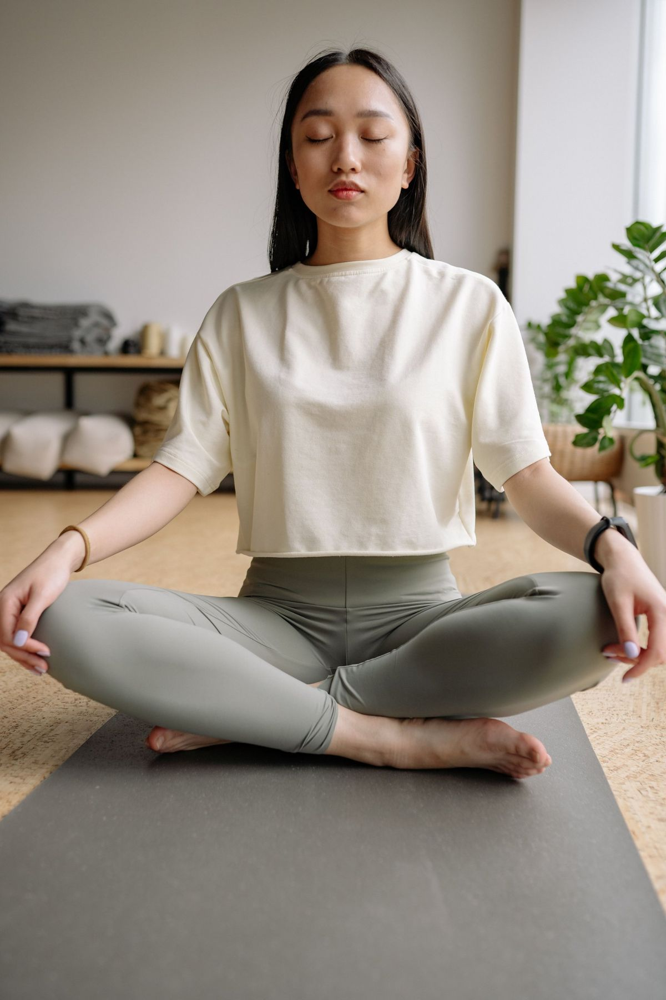
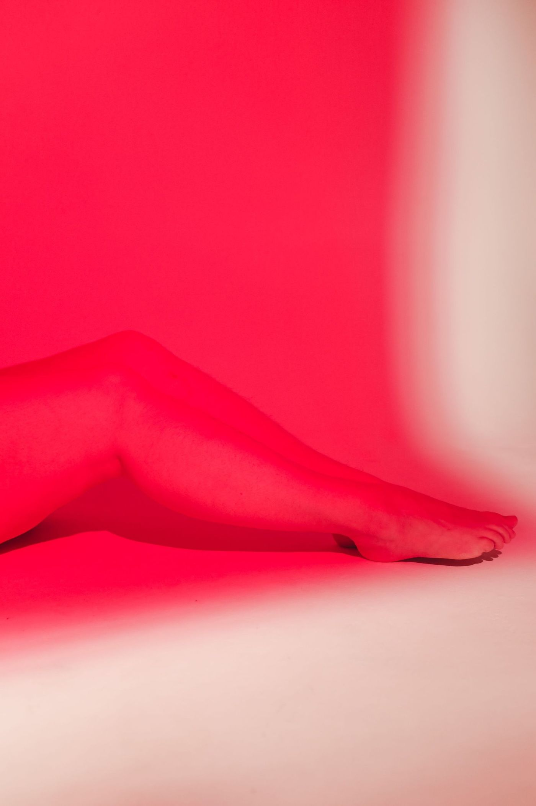
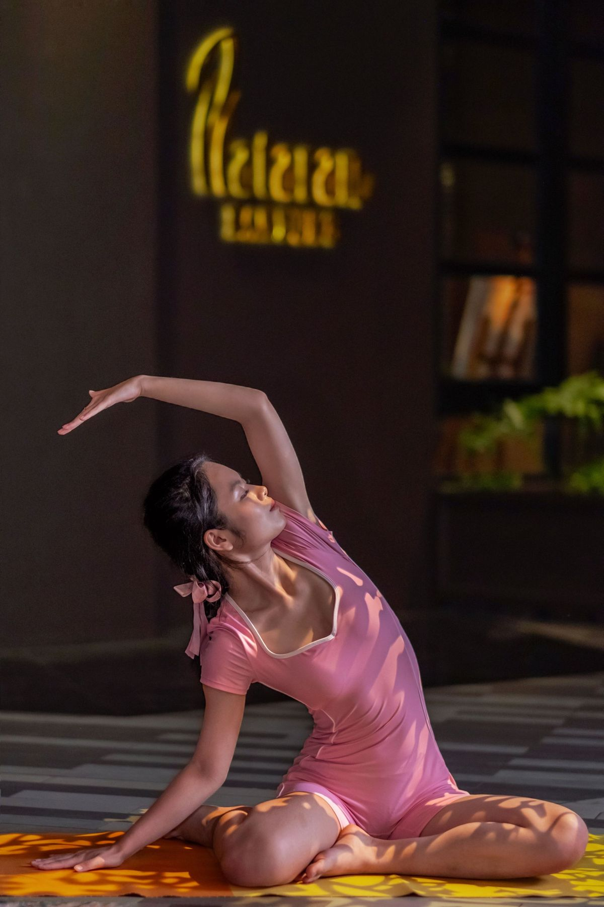

1:1 Online coaching, Recovery
Train hard.
Herstel slimmer.
Warmte, kou en licht, vier methodes om sneller te herstellen, uitgelegd met wat de wetenschap erover zegt en hoe je ze slim inzet.
Het overzicht
Vier methodes.
Eén doel: herstel.
Klik op een onderdeel voor de voordelen, de juiste temperatuur en duur, en hoe je het inpast in je trainingsweek.
Nº 01 · Warmte
Zweet de dag van je af.

Afkoelen in de buitenluchtDe sauna traint je hart, terwijl jij ontspant. Bij 80–100 °C stijgt je hartslag zoals bij een stevige wandeling, en grote Finse studies koppelen regelmatig saunagebruik aan een gezonder hart, diepere ontspanning en beter slapen.
De voordelen
- Hart & bloedvatenRegelmatig saunagebruik wordt in Fins onderzoek gekoppeld aan een lager risico op hart- en vaatproblemen.
- Diepe ontspanningWarmte verlaagt spierspanning en helpt je hoofd leeg te maken na een drukke dag.
- Beter slapenDe afkoeling ná de sauna ondersteunt het natuurlijke inslaapproces.
- Soepelere spierenBetere doorbloeding kan stijfheid na een zware training verzachten.
- Huid & zwetenFlink zweten geeft een fris gevoel en went je lichaam aan warmte.
- Mentale resetEen vast saunamoment werkt als rustpunt in je week, herstel begint in je hoofd.
Zo pak je het aan
- Stap 01Ga 10–20 minuten de sauna in; stap eerder uit als het te veel is.
- Stap 02Koel rustig af (douche of buitenlucht) en rust kort uit voor een volgende ronde.
- Stap 03Drink voor en na ruim water, zweten kost snel een halve liter of meer.
Goed om te weten: sla alcohol over rond de sauna en overleg bij hart- en vaatproblemen of zwangerschap eerst met je arts.
Nº 02 · Kou
Twee minuten. Helemaal wakker.
Kou zet je systeem in één klap aan. Water van 10–15 °C geeft een directe stoot adrenaline en noradrenaline, kan het gevoel van spierpijn na inspanning dempen en wordt in een grote overzichtsstudie gekoppeld aan minder ervaren stress.
De voordelen
- Minder spierpijngevoelKou na intensieve duurinspanning kan het beurse gevoel (DOMS) dempen.
- Direct alertDe koudeprikkel geeft een natuurlijke boost aan adrenaline en noradrenaline, je staat meteen "aan".
- Stemming & stressOnderzoek koppelt koudwaterdompeling aan minder ervaren stress en een beter humeur.
- Mentale veerkrachtRustig blijven in kou is trainbare discipline die je meeneemt naar de rest van je week.
- Bewuste ademhalingHet dwingt je tot langzaam, gecontroleerd ademen, een vaardigheid op zich.
- Vast ritueelEen korte, scherpe prikkel met een duidelijk begin en einde, makkelijk vol te houden.
Zo pak je het aan
- Stap 01Begin kort: 1–2 minuten rond 12–15 °C en bouw rustig op naar 3–5 minuten.
- Stap 02Adem traag uit en ontspan je schouders, de eerste 30 seconden zijn het zwaarst.
- Stap 03Warm op eigen kracht op: bewegen en aankleden, geen hete douche direct erna.
Belangrijk voor spieropbouw: plan een ijsbad niet direct na je krachttraining, de kou kan de spiergroeiprikkel afremmen. Kies een rustdag of wacht enkele uren. Ga nooit alleen het ijsbad in en overleg bij hartklachten eerst met je arts.
Nº 03 · Diepe warmte
Milde hitte. Diep effect.
Infrarood verwarmt jóu, niet de lucht. Daardoor zweet je al flink bij 45–60 °C en houd je het comfortabel 20–30 minuten vol: dezelfde ontspanning en doorbloeding, zonder de extreme hitte van een klassieke sauna.
De voordelen
- Milder, langerLagere temperatuur betekent dat je comfortabel 20–30 minuten kunt blijven zitten.
- Directe warmteInfraroodstraling warmt het lichaam zelf op, je zweet sneller bij minder hitte.
- SpierontspanningWarmte op vermoeide spieren voelt na leg day als een verademing.
- ToegankelijkPrettig alternatief als een klassieke sauna je te heet of benauwd is.
- RustmomentLees, mediteer of doe niets, 25 minuten zonder telefoon is herstel op zich.
- Combineert goedIdeaal te stapelen met ademwerk of licht stretchen in dezelfde sessie.
Zo pak je het aan
- Stap 01Start met 15–20 minuten en bouw op naar 25–30 minuten per sessie.
- Stap 02Combineer met rustige neusademhaling of een korte bodyscan.
- Stap 03Drink na afloop ruim water en neem een lauwe douche.
Goed om te weten: het onderzoek naar infraroodsauna's is kleiner dan naar traditionele sauna's; de ontspannings- en warmtevoordelen zijn vergelijkbaar, de langetermijneffecten zijn minder uitgebreid onderzocht.

25 minuten zonder telefoonNº 04 · Licht
Herstel op golflengte.
Rood en nabij-infrarood licht van 630–850 nm ondersteunt je cellen. Onderzoek suggereert voordelen voor huid en spierherstel, veelbelovend, al is het bewijsveld jonger en kleiner dan bij warmte en kou.

630–850 nmDe voordelen
- HuidStudies koppelen rood licht aan ondersteuning van collageenaanmaak en een egaler huidbeeld.
- SpierherstelEerste onderzoeken wijzen op minder spiervermoeidheid rond trainingen.
- AvondvriendelijkRood licht is prikkelarm en verstoort je avondritme niet, in tegenstelling tot fel blauw licht.
- Passief & stapelbaarJe ligt of zit er simpelweg voor; makkelijk te combineren met stretchen of ademwerk.
Zo pak je het aan
- Stap 01Plaats je op 15–30 cm van het paneel, met blote huid richting het licht.
- Stap 02Doe 10–20 minuten per zone, 3–5× per week, bescherm je ogen bij felle panelen.
- Stap 03Houd het 4–6 weken vol voordat je het effect beoordeelt.
Eerlijk verhaal: roodlicht is geen wondermiddel en vervangt training, voeding en slaap niet. Zie het als de laatste 5%, niet als het fundament.
Nº 05 · De keuze
Wat past bij jou?
| Finse sauna | Infraroodsauna | IJsbad | Roodlicht | |
|---|---|---|---|---|
| Prikkel | 80–100 °C hete lucht | 45–60 °C directe straling | 10–15 °C koud water | 630–850 nm licht |
| Sessie | 10–20 min | 20–30 min | 2–5 min | 10–20 min |
| Voelt als | Intense, droge hitte | Milde, diepe warmte | Korte, scherpe kou | Warm licht op de huid |
| Vooral voor | Ontspanning, hart, slaap | Warmte zonder extreme hitte | Alertheid, minder spierpijngevoel | Huid en spierherstel |
| Let op | Hydrateren, geen alcohol | Kleiner onderzoeksveld | Niet direct na krachttraining | Consistentie nodig |
Vragen & antwoorden
Veelgestelde vragen.
Hoe lang moet je in een ijsbad zitten?
Begin met 1–2 minuten rond 12–15 °C en bouw rustig op naar 3–5 minuten. Langer is niet per se beter: de meeste voordelen zitten in de eerste minuten. Stap eruit zodra je oncontroleerbaar gaat rillen.
Is elke dag naar de sauna gezond?
Fins onderzoek zag de sterkste verbanden met hartgezondheid juist bij frequent gebruik (meerdere keren per week). Voor de meeste mensen is 2–4 keer per week 10–20 minuten een prima ritme, luister naar je lichaam en drink voldoende.
Wat is het verschil tussen een sauna en een infraroodsauna?
Een Finse sauna verwarmt de lucht tot 80–100 °C; een infraroodsauna verwarmt je lichaam direct met straling bij 45–60 °C. Infrarood voelt milder en je blijft er langer in zitten; de ontspannings- en zweeteffecten zijn vergelijkbaar.
Helpt een ijsbad tegen spierpijn?
Kou kan het gevoel van spierpijn (DOMS) na intensieve inspanning dempen en je herstelgevoel verbeteren. Belangrijke nuance: direct ná krachttraining kan een ijsbad de spiergroeiprikkel afremmen, plan het op rustdagen of enkele uren later.
Wat doet roodlichttherapie precies?
Rood en nabij-infrarood licht (630–850 nm) dringt enkele millimeters tot centimeters de huid in en zou de energiehuishouding van cellen ondersteunen. Onderzoek laat voorzichtige voordelen zien voor huid en spierherstel; het bewijs groeit, maar is nog beperkt.
Wanneer kan ik beter géén sauna of ijsbad nemen?
Bij hart- en vaatproblemen, zwangerschap, koorts of medicijngebruik dat je temperatuurregulatie beïnvloedt: overleg eerst met je arts. Ga nooit alleen een ijsbad in en vermijd alcohol rond hitte- en koudesessies.
Deze pagina geeft algemene informatie over herstel en is geen medisch advies. Twijfel je of sauna, ijsbad, infrarood of roodlicht bij jouw situatie past? Overleg dan met je (huis)arts.

Recovery hoort bij je plan.
In jouw coachingstraject plannen we trainen, eten én herstellen, zodat het resultaat blijft.
Plan een gratis intake ← Terug naar de homepagina